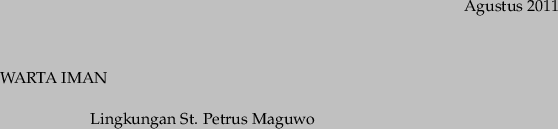

T1pplb0.7in T1pplbit0.7in T1pplbit0.25in T1pplbit0.175in T1pplbit0.15in

Berkah Dalem,
Setelah beberapa saat Warta Iman (WI) tidak muncul, mulai bulan Agustus 2011 WI akan diusahakan mengunjungi Anda sekali dalam 1 bulan. Bulan Agustus mengingatkan kita pada peringatan hari kemerdekaan Republik Indonesia yang jatuh pada tanggal 17 Agustus. Oleh karena itu tema untuk bulan ini adalah kemerdekaan. Sejak semula ternyata memang putra-putra gereja, khususnya dari Keuskupan Agung Semarang turut menghiasi pusara ibu pertiwi dengan jasa-jasanya. Setidaknya ada Ignatius Slamet Riyadi (1945), Agustinus Adisucipto (1947), dan Yos Sudarso (1961). Kisah-kisah mengenai mereka dapat kita simak pada beberapa tulisan di edisi kali ini.
Bulan Juli kemarin beredar juga Buletin Kasih sebagai rasa syukur pesta nama St. Petrus yang jatuh pada tanggal 29 Juni. Rasa syukur pula yang menyebabkan anak-anak muda (OMK) St. Petrus giat berlatih gamelan dan mempersembahkan hasilnya pada misa syukur pada tanggal 3 Juli 2011. Saudara Ferry mewakili teman-temannya menuliskan pengalamannya nabuh gamelan. Dalam tulisannya Ferry mengajak generasi muda untuk mensyukuri kemerdekaan dan mengisinya dengan kegiatan bersama dengan kebersamaan.
Tulisan tentang kasih yang membebaskan dan kemerdekaan manusia dari beban hukum dapat memperkaya kita tentang hubungan kasih dan kebebasan. Edisi kali inipun dihiasi oleh puisi agar banyak aksi daripada banyak bicara kiriman dari BS.
Mulai edisi ini akan dicuplik tentang isi Kompendium Katekese Gereja Katolik, yang diharapkan dapat memperkaya pengetahuan iman kita.
Ignatius Slamet Rijadi adalah salah seorang di antara ribuan anak muda yang sejak detik pertama Proklamasi Kemerdekaan Indonesia secara sukarela terjun memenuhi panggilan revolusi. Sebagai bekas bintara Kaigun (Angkatan Laut Jepang) yang batal dikirim ke Tokyo karena Perang Pasifik berakhir lebih cepat, Slamet Rijadi kemudian tampil memimpin aksi penyerbuan ke markas Kempeitai (Polisi Rahasia Jepang) di Solo dan menjadi anak zaman. Pertempuran demi pertempuran dilalui Slamet Rijadi, dari mengusir Jepang, melawan Inggris, Belanda, pemberontak Komunis, dan Darul Islam, hingga menumpas Republik Maluku Selatan. Dia gugur pada usia 23 tahun dengan pangkat Letnan Kolonel sebagai Komandan Operasi Maluku Selatan akibat tembakan seorang sniper di depan Fort Victoria, Ambon, Maluku. Sebutan Pahlawan Nasional sekaligus anugerah Bintang Mahaputera Adipradana kepada Brigadir Jenderal (Anumerta) Ign. Slamet Rijadi disampaikan oleh Presiden Susilo Bambang Yudhoyono awal November 2007 "untuk tindak kepahlawanan dalam perjuangan merebut, membela dan mempertahankan negara dan bangsa, sehingga bisa jadi teladan bagi seluruh masyarakat Indonesia."
Pada suatu peristiwa saat akan diadakannya peralihan kekuasaan di Solo oleh Jepang yang dipimpin oleh Tyokan Watanabe yang merencanakan untuk mengembalikan kekuasaan sipil kepada kedua kerajaan yang berkedudukan di Surakarta, yaitu Kasunanan dan Praja Mangkunagaran, akan tetapi rakyat tidak puas. Para pemuda telah bertekad untuk mengadakan perebutan senjata dari tangan Jepang, maka rakyat mengutus Muljadi Djojomartono dan dikawal oleh pemuda Suadi untuk melakukan perundingan di markas Ken Pei Tai (polisi militer Jepang) yang dijaga ketat. Tetapi sebelum utusan tersebut tiba di markas, seorang pemuda sudah berhasil menerobos kedalam markas dengan meloncati tembok dan membongkar atap markas Ken Pei Tai, tercenganglah pihak Jepang, pemuda itu bernama Slamet Riyadi.
Pada tahun 1940, ia menyelesaikan pendidikan di HIS, ke Mulo Afd. B dan kemudian dilanjutkan ke Pendidikan Sekolah Pelayaran Tinggi, dan memperoleh ijasah navigasi laut dengan peringkat pertama dan mengikuti kursus tambahan dengan menjadi navigator pada kapal kayu yang berlayar antar pulau Nusantara. Setelah pasukan Jepang, mendarat di Indonesia melalui Merak, Indramayu dan dekat Rembang pada tanggal 1 Maret 1942 dengan kekuatan 100.000 orang, dan walaupun memperoleh perlawanan dari Hindia Belanda, tetapi dalam waktu singkat yaitu pada tanggal 5 dan 7 Maret 1942, Kota Solo dan Yogyakarta jatuh ketangan Jepang.
Slamet Riyadi merasa terpanggil membela ibu pertiwi, dan menjelang proklamasi 1945, ia mengobarkan pemberontakan dan melarikan sebuah kapal kayu milik Jepang, usaha Ken Pei Tai untuk menangkapnya tidak pernah berhasil, bahkan setelah Jepang bertekuk lutut. Slamet Rijadi berhasil menggalang para pemuda, menghimpun kekuatan pejuang dari pemuda-pemuda terlatih eks Peta/Heiho/Kaigun dan merekrutnya dalam kekuatan setingkat Batalyon, yang dipersiapkan untuk mempelopori perebutan kekuasaan politik dan militer di kota Solo dari tangan Jepang ( Slamet Riyadi diangkat sebagai Komandan Batalyon Resimen I Divisi X ).
Dalam perkembangannya terjadi pergantian pimpinan militer, Divisi X dirubah menjadi Divisi IV, dengan Panglimanya Mayor Jenderal Soetarto dan divisi ini dikenal dengan nama Divisi Penembahan Senopati, yang membawahi 5 Brigade tempur . Diantaranya Brigade V dibawah pimpinan Suadi dan mempunyai Batalyon XIV dibawah komando Mayor Slamet Rijadi, yang merupakan kesatuan militer yang dibanggakan. Pasukannya terkenal dengan sebutan anak buah "Pak Met" . Selama agresi Belanda II, pasukannya sangat aktif melakukan serangan gerilya terhadap kedudukan militer Belanda, pertempuran demi pertempuran membuat sulit pasukan Belanda dalam menghadapi taktik gerilya yang dijalankan Slamet Riyadi.
Namanya mulai disebut-sebut karena hampir di-setiap peristiwa perlawanan di kota Solo selalu berada dalam komandonya.
Sewaktu pecah pemberontakan PKI-Madiun, batalyon Slamet Rijadi sedang berada diluar kota Solo, yang kemudian diperintahkan secara langsung oleh Gubernur Militer II - Kolonel Gatot Subroto untuk melakukan penumpasan ke arah Utara, berdampingan dengan pasukan lainnya, operasi ini berjalan dengan gemilang.
Dalam palagan perang kemerdekaan II, Slamet Rijadi dinaikkan pangkatnya menjadi Letnan Kolonel, dengan jabatan baru Komandan "Wehrkreise I" ( Penembahan Senopati )yang meliputi daerah gerilya Karesidenan Surakarta, dan dibawah komando Gubernur Militer II pada Divisi II, Kolonel Gatot Subroto. Dalam perang kemerdekaan II inilah Let.Kol. Slamet Rijadi, membuktikan kecakapannya sebagai prajurit yang tangguh dan sanggup mengimbangi kepiawaian komandan Belanda lulusan Sekolah Tinggi Militer di Breda Nederland. Siang dan malam anak buah Overste (setingkat Letnan Kolonel ). Van Ohl digempur habis-habisan, dengan penghadangan, penyergapan malam, sabotase . Puncaknya ketika Let.Kol Slamet Riyadi mengambil prakarsa mengadakan "Serangan Umum Kota Solo" yang dimulai tanggal 7 Agustus 1949, selama empat hari empat malam. Serangan itu membuktikan kepada Belanda, bahwa gerilya bukan saja mampu melakukan penyergapan atau sabotase, tetapi juga mampu melakukan serangan secara frontal ketengah kota Solo yang dipertahankan dengan pasukan kavelerie, persenjataan berat-artileri, pasukan infantri dan komando yang tangguh. Dalam pertempuran selama empat hari tersebut, 109 rumah penduduk porak poranda, 205 penduduk meninggal karena aksi teror Belanda, 7 serdadu Belanda tertembak dan 3 orang tertawan sedangkan dipihak TNI 6 orang gugur.
Setelah terjadi gencatan senjata, dan pada waktu penyerahan kota Solo kepangkuan Republik Indonesia, dari pihak Belanda diwakili oleh "Overste Van Ohl" sedangkan dari pihak R.I oleh Let.Kol. Slamet Riyadi. Ov.Van Ohl demikian terharu, bahwa Let. Kol. Slamet Riyadi yang selama ini dicari-carinya ternyata masih sangat muda . " Oooh ...Overste tidak patut menjadi musuh-ku.....", Overste pantas menjadi anakku, tetapi kepandaiannya seperti ayahku.
Pada akhir tahun 1949, sebagai penganut agama Katolik, Slamet Riyadi di baptis dengan nama Ignatius di Gereja Santo Antonius Purbayan Solo. Pada tanggal 10 Juli 1950, Letnan Kolonel Ignatius Slamet Rijadi, berangkat dengan kapal Waikalo dan memimpin batalyon 352 untuk bergabung dengan pimpinan umum operasi - Panglima TT VII - Kolonel Kawilarang, dalam penugasan menumpas pemberontakan Kapten Andi Aziz di Makasar dan pemberontakan Republik Maluku Selatan (RMS) yang dipelopori oleh Dr. Soumokil dan kawan-kawan.
| 1940 | Sekolah Tinggi Pelayaran Rekrutmen Pemuda oleh tentara Jepang |
| 1943 | Navigator kapal kayu Pemberontakan kapal,milik Jepang |
| 1945 | Dan.Yon.Res.I, Divisi I Perang di Krsd. Solo melawan Jepang & Belanda |
| 1945 | Dan.Yon.Res.I, Divisi I Penumpasan pemberontakan PKI Madiun |
| 1948 | Dan.Wehrkreise I Perang Kemerdekaan II, Serangan Umum Solo |
| 1949 | Wakil Pemerintah RI Penyerahan Kota Solo |
| 1949 | Komando Yon.352 Mendukung Div.Siliwangi menumpas APRA di Jabar. |
| 1949 | Wakil.Panglima TT VII. Penumpasan Pemberontakan di Makasar, RMS Ambon |
| 1950 | Wakil.Panglima TT VII. |
| 1950 | Gugur di gerbang benteng Victoria, Ambon 4-11-1950 |
| 1950 | Brigadir Jendral Anumerta Kenaikan pangkat atas jasa almarhum |
| 2007 | mendapat penghormatan sebagai Pahlawan Nasional. |
| 2007 | dibangun Patung Ignatius Slamet Riyadi di bundaran Gladak, Solo. |
Agustinus Adisutjipto sempat belajar di Sekolah Tinggi Kedokteran (Geneeskundige Hoge School) di Jakarta, tetapi tidak selesai. Kemudian ia memutuskan untuk pindah ke Sekolah Penerbang Militaire Luchtvaart di Kalijati. Selesai pendidikan ia bertugas di Squadron Pengintai Udara.
Sesudah Indonesia merdeka, ia menyumbangkan tenaga membina Angkatan Udara Republik Indonesia bersama S. Suryadarma, yang kemudian diangkat menjadi Kepala Staf AURI. Saat itu, tenaga penerbang sangat sedikit. Pesawat terbang hampir-hampir tidak ada, dan kalau pun ada sudah rongsokan. Teknisi-teknisi Indonesia berusaha memperbaiki pesawat tersebut. Tanggal 27 Oktober 1945, Adisutjipto berhasil menerbangkan sebuah pesawat. Penerbangan itu adalah penerbangan pertama yang dilakukan oleh putra Indonesia. Pada tanggal 1 Desember 1945 Adisutjipto mendirikan Sekolah Penerbang di Yogyakarta, tepatnya di Lapangan Udara Maguwo, yang kemudian diganti namanya menjadi Bandara Adisucipto, untuk mengenang jasa beliau sebagai pahlawan nasional. Di situ dididik kader-kader Angkatan Udara. Karena jasa-jasanya itu Adisutjipto disebut bapak Penerbang Indonesia.
Jabatan lain yang pernah dipegangnya ialah Wakil II Kepala Staf Angkatan Udara. Selain itu, pernah pula ditugasi ke India dan Filipina untuk mencari tenaga pelatih dan menyewa pesawat terbang. Di India, berkat bantuan Perdana Menteri Jawaharlal Nehru, ia berhasil mengadakan perundingan dengan Patnaik yang kemudian bersedia menyewakan sebuat pesawat Dakota.
Agustinus Adisutjipto adalah pribadi yang mempunyai komitmen tinggi terhadap negara dan bangsa. Komitmen itu tidak lepas dari hidup imannya yang kuat. Iman kepada Kristus telah menggerakkan hidupnya untuk melayani dan mengabdi kepada sesama bangsa dan negara meski risiko besar harus ditanggung.
Marsekal Muda (Pur) Agustinus Adisutjipto akrab dipanggil Cip namun kemudian rekan-rekannya memanggilnya Pak Adi merupakan putra pertama dari lima bersaudara buah perkawinan Roewidodarmo dan Latifatun. Adisutjipto, sangat gemar bermain sepakbola, naik gunung, tenis dan catur. Intelektualitasnya terasah lewat hobinya membaca buku-buku kemiliteran dan filsafat. Pribadinya dikenal pendiam, namun sangat reaktif bila harga dirinya terinjak. Ketika Jepang mendarat Maret 1942, peta penerbangan Hindia Belanda berubah. Adisutjipto yang ketika PD II pecah ditempatkan di skadron intai di Jawa beserta rekan-rekannya seperti Sujono, Sulistyo, dan Husein Sastranegara, tidak pernah lagi terbang. Semua yang berbau Belanda dimusnahkan. Untuk mengisi kekosongan, Cip bekerja di perusahaan angkutan bus milik Jepang.
Sejak pekik kemerdekaan berkumandang 17 Agustus 1945, satu demi satu muncul berbagai tuntutan. Termasuk penerbangan militer. Suryadarma bertindak cepat. Para eks penerbang AU Hindia Belanda, seperti Adisutjipto, dipanggilnya. Berbagai langkah konsolidasi, mulai dari mengumpulkan ratusan pesawat sampai mengupayakan perbaikan pesa-wat-pesawat peninggalan Jepang, diambil.
Usaha Suryadarma langsung berbuah. Buktinya, Adisutjipto berhasil menerbangkan pesawat Nishikoren dari Cibereum ke Maguwo, 10 Oktober 1945. Peristiwa ini tercatat sebagai penerbangan pertama di wilayah RI merdeka oleh awak Indonesia. Tujuhbelas hari kemudian, kembali Adisutjipto membakar semangat perjuangan dengan menerbangkan pesawat Cureng bertanda merah putih. Peristiwa ini mengukir lagi catatan sejarah, sebagai penerbangan berbendera merah putih pertama di tanah air.
Adi Sutjipto terbang ke India untuk mengambil obat2an dan sekembalinya dari India ketika memasuki wilayah Indonesia. Di ujung cakrawala, terlihat pesawat Dakota VT-CLA melakukan approach. Para penumpangnya, Adisutjipto, Abdulrachman Saleh, AN Constantine (pilot), R Hazelhurst (ko-pilot), Adisumarmo Wiryokusumo (engineer), Bhida Ram, Nyonya Constantine, Zainal Arifin (wakil dagang RI), dan Gani Handonocokro, tentu bahagia karena sesaat lagi akan mendarat. Begitu juga Sudarjono yang lagi piket, akan bertemu dengan kakaknya.
Sekonyong-konyong, muncul dua pesawat P-40 Kitty Hawk Belanda dari arah utara yang langsung memberondong Dakota, pesawat sipil yang jelas-jelas membawa bantuan. Pesawat kehilangan ketinggian, melayang kencang dan menyambar sebatang pohon hingga badannya patah menjadi dua bagian. Begitu pesawat terhempas ke tanah, langsung terbakar. Suryadarma dan semua orang penunggu, berlarian ke arah pesawat naas. Peristiwa itu terjadi di Dusun Ngoto pada tanggal 29 Juli 1947. Beliau dimakamkan di pemakaman umum Kuncen I dan II, dan kemudian pada tanggal 14 Juli 2000 dipindahkan ke Monumen Perjuangan di Desa Ngoto, Bantul, Yogyakarta.
Pertempuran Laut Aru adalah suatu pertempuran yang terjadi di Laut Aru, Maluku, pada tanggal 15 Januari 1962 antara Indonesia dan Belanda. Insiden ini terjadi sewaktu dua kapal jenis destroyer, pesawat jenis Neptune dan Frely milik Belanda menyerang KRI Macan Tutul, KRI Macan Kumbang dan KRI Harimau milik Indonesia yang sedang berpatroli pada posisi 04,49° LS dan 135,02° BT. Komodor Yos Sudarso gugur pada pertempuran ini setelah menyerukan pesan terakhirnya yang terkenal, "Kobarkan semangat pertempuran".
Pada saat itu terjadi pertempuran sengit antara pasukan militer Indonesia dengan Belanda. Meski berstatus sebagai Kepala Staff TNI-AL Yos sudarso ikut turut ke medan tempur. Naas dalam peristiwa tersebut, Laksamana Madya Yos Sudarso gugur setelah KRI Macan Tutul di bombardir Belanda di Laut Aru saat melawan armada Belanda.
Armada Indonesia di bawah pimpinan Yos Sudarso, yang saat itu berada di KRI Macan Tutul, berhasil melakukan manuver untuk mengalihkan perhatian musuh sehingga hanya memusatkan penyerangan ke KRI Macan Tutul. KRI Macan Tutul tenggelam beserta awaknya, tapi kedua kapal lainnya berhasil selamat.
Beliau gugur di atas KRI Macan Tutul dalam pertempuran Laut Aru pada masa kampanye Trikora. Namanya kini diabadikan pada sebuah KRI dan pulau. Ia gugur di atas KRI Macan Tutul pada tanggal 13 Januari 1962 pada saat berusia 36 tahun. Keikutsertaannya dalam posisi sebagai KSAL-pun dipertanyakan karena tidak lazimnya seorang Kepala Staff Angkatan Laut turun langsung dalam medan tempur.
Untuk menghargai jasa-jasa atas keikutsertaannya dalam memperjuangkan merebut Irian Barat, ia dianugerahi sebagai Pahlawan Pembela Kemerdekaan. Kini namanya diabadikan sebagai nama armada angkatan laut Indonesia, nama pulau, dan nama jalan-jalan protokol di kota-kota besar Indonesia.
Ia meninggalkan seorang istri bernama Ny. Siti Kustini, yang dinikahinya pada tahun 1955 dan dikaruniai lima anak dan dua diantaranya meninggal dunia.
Berselang 44 tahun setelah Yos Sudarso meninggal. Istri pahlawan Aru ini, Nyonya Josephine F Siti Kustini kemudian meninggal. Siti Kustini yang merupakan kelahiran Ngawi, Jawa Timur, 1935, meninggal dunia pada usia 71 tahun tepatnya, Sabtu 2 September 2006 pukul 14.00, di Rumah Sakit Angkatan Laut Dr Mintohardjo, Jakarta. Akibat penyakit jantung dan radang paru-paru. Jenazah kemudian dimakamkan, Senin, 4 September 2006 di Tempat Pemakaman Umum Kaliwuluh, Desa Kaliwuluh, Kecamatan Kebak Kramat, Kabupaten Karanganyar, Jawa Tengah.
Semasa hidupnya, Ny. Siti Kustini dikenal sebagai orang yang sangat disiplin, selalu tepat waktu, termasuk menunaikan ibadah agama dengan mengikuti misa kudus hampir setiap hari.
Sebelum pemberangkatan jenazah dari Jakarta menuju Surakarta dengan menggunakan pesawat TNI AL dari Bandar Udara Halim Perdanakusuma. Misa arwah terlebih dahulu dilakukan yang dipimpin Pastor Luarens di kediaman almarhumah, di jalan Cimandiri Nomor 12, Cikini, Jakarta Pusat. Saat itu juga dihadiri mantan Kepala Staf TNI Angkatan Laut Laksamana (Purn) Sudomo, mantan Gubernur DKI Jakarta Ali Sadikin, dan sesepuh TNI AL lainnya
Beberapa bulan yang lalu lingkungan St.Petrus baru saja merayakan pesta nama pelindung, untuk memeriahkan acara tersebut OMK St. Petrus, yang memang saat itu sedang memiliki program untuk melestarikan musik tradisional Jawa, yaitu Gamelan, diberi kesempatan untuk tampil perdana memainkan gamelan mengiringi misa pada perayaan pesta nama di gereja Bunda Maria Maguwo.
Begitu banyak kisah dibalik penampilan perdana mereka. Mulai dari mereka telat datang latihan hingga masalah baju surjan yang kegedean. Namun itu semua tidak menghalangi kami untuk berkarya dan menunjukkan yang terbaik. Awalnya ketua mudika kami sempat sedikit putus asa karena hanya sedikit yang ingin berpartisipasi bermain gamelan ini. Namun setelah latihan hari pertama dengan hanya beberapa orang namun sudah cukup membuat orangtua kami begitu terpana. Diantara kami hanya 3 orang saja yang memang sudah menguasai gamelan dan yang lainnya semua mulai dari nol. Bagi sebagian orang mungkin cukup mengejutkan. Namun itulah kami, he he
Setelah melalui proses latihan yang bisa dibilang begitu singkat, akhirnya tibalah saat kami menunjukkan hasil kerja keras kami berlatih selama beberapa minggu. Cukup grogi untuk kami, namun semuanya itu sirna setelah kami mulai memainkan lagu pertama dan cukup sukses hingga acara misa itu selesai. Sungguh pengalaman yang sangat berharga dan membanggakan bagi kami.
Dari sedikit cerita tentang usaha kaum muda yang mau dan rela meluangkan waktunya untuk berlatih hal atau sesuatu dalam bidang musik, yang bisa dibilang untuk kalangan muda di jaman sekarang adalah sesuatu yang membosankan, karena mereka lebih memilih musik yang cenderung keras, dapat dikatakan bahwa gamelan merupakan sebuah permainan alat musik yang dapat menyatukan semua unsur terutama unsur kebersamaan, kerja sama dan toleransi. Gamelan memang tidak bisa dimainkan seorang diri dan nada alat yang satu dengan yang lain memang harus selaras. Sama juga seperti keberagaman yang ada di negeri kita Indonesia ini, dengan semboyan “Bhineka Tunggal Ika” diharapkan kaum muda saat ini lebih bisa menghargai budaya satu sama lain tanpa mengejek atau menjadikan bahan ejekan yang mengandung SARA. Kaum muda juga diharapkan bisa melestarikan kebudayaan bangsa kita ini. Bermain gamelan seperti di atas juga merupakan salah satu cara melestarikan budaya lho .. Apalagi budaya di Indonesia ini bisa dibilang cukup beragam. Banyak suku di Indonesia yang mempunyai kebudayaannya masing-masing.
Dalam rangka memperingati hari kemerdekaan RI pada 17 Agustus nanti, diharapkan kaum muda dapat berperan aktif dalam menyemarakkan peringatan tersebut. Cara paling sederhana adalah bagi teman-teman yang masih sekolah dapat mengikuti upacara bendera di sekolah atau bahkan terlibat dalam kelompok PASKIBRAKA. Peran kaum muda saat ini sangat dibutuhkan. Kaum muda merupakan penerus bangsa dan menjadi tumpuan untuk kemajuan bangsa ini. Intinya buat kaum muda, mari bangkitlah dan berjuang dalam menghadapi jaman yang serba modern ini. Jadilah penerus bangsa! Kalau bukan kita siapa lagi kawan ..
DIRGAHAYU INDONESIAKU!!!
Berbuatlah kebaikan tanpa banyak bicara
Cintailah Tuhan dan sesama tanpa banyak bicara
Kerjakan tugasmu tanpa banyak bicara
Terimalah kehendak Allah tanpa banyak bicara
Berbahagialah bersama orang lain tanpa banyak bicara
Tutupilah kesalahan orang lain tanpa banyak bicara
Peluklah Salib-Ku tanpa banyak bicara
Berkorban dan serahkan dirimu tanpa banyak bicara
Tataplah surga tanpa banyak bicara
Bertahanlah sampai mati tanpa banyak bicara
Manusia dalam abad modern ini sungguh terasa lebih mementingkan diri sendiri, demi “uang”, “harga diri” “jabatan” dan sebagainya. Nilai-nilai dasar kemanusiaan tidak lagi menjadi patokan untuk membuat sebuah pertimbangan. Kasus korupsi, ketidak adilan hukum menjadi berita sehari-hari baik di media massa maupun media elektronik. Kasus Korupsi dari Gayus Tambunan hingga Nazarudin, kasus ketidak adilan hukum dari Prita dan sebagainya membuat manusia bangsa dan negeri ini semakin meninggalkan hati nurani mereka.
Dalam berbagai ketidak pastian akan penyelesaian akan segala hal tersebut, Dia mengundang kita untuk merayakan perjamuan Tuhan. Allah Tahu bahwa ada pengkhianatan, tapi Dia tidak membalas pengkhianatan dengan kekerasan, Dia membalas dengan cinta dan kasih. Cinta yang begitu besar yang ada di dalam diri Allah inilah yang membuat Dia melakukan tindakan yang sulit diterima oleh akal budi.
Simbol perjamuan adalah penerimaan antara yang satu dengan yang lain dimana idak ada saling curiga, permusuhan, pemaksaan. Semua dilebur dalam bahasa kasih. Kasih adalah sebuah tindakan nyata seperti halnya Yesus sendiri merelakan harga diri mau menjadi hamba dengan tindakan membasuh kaki para muridnya. Itu bukan hanya sebuah pengakuan bahwa dosa sudah diampuni, tetapi lebih dalam lagi adalah bahwa engkau yang menyebut diri sebagai murid Yesus harus melakukan hal yang sama.
Menjadi murid Yesus harus berani menyangkal dirinya. Siapa yang berani mengikuti Yesus, dia harus berani membagi kasih itu kepada sesamanya. Orang yang membiarkan sesamanya kelaparan adalah melawan kasih. Orang yang membiarkan ketidak adilan terus berjalan adalah melawan kasih. Tindakan Allah mencintai adalah sebuah pemberian. Tindakan Yesus memberikan nyawa-Nya sebagai tebusan bagi manusia berdosa bukan dengan bahasa pemaksaan dan kekerasan tetapi dengan kasih. Tindakan kasih itu adalah tindakan orang-orang yang memiliki hati nurani yang sehat, yakni orang-orang yang tidak membiarkan sesamanya menderita karena adanya suatu ketidak adilan. Tindakan Kasih N Itulah yang dilakukan oleh Yesus dalam perjamuan. “Inilah tubuh-Ku yang dikorbankan bagimu, inilah piala perjanjian baru yang diikat dalam darah-Ku sebagai pembaharuan dalam kasih. Pembaharuan bukan sekedar bualan dengan kata-kata, tetapi suatu tindakan moral. Bertindak atas nama moral berarti membangun kesejahteraan bangsa ini.
Dalam Injil sering kali diceritakan bahwa orang Farisi bertengkar dengan Yesus mengenai hari sabat. Sering kali perbuatan-perbuatan Yesus dianggap melanggar peraturan Sabat. Diantara perbuatan-perbuatan yang dilakukan Yesus terdapat tindakan tertentu yang mengungkapkan sikap dan pandangan Yesus mengenai hukum Taurat. Yesus memaklumkan bahwa Allah adalah segala hukum, peraturan, dan perintah yang harus diabdikan pada tujuan pemerdekaan manusia. Maksud terdalam setiap hukum adalah membebaskan manusia dari segala sesuatu yang dapat menghalangi manusia berbuat baik. Begitu pula tujuan hukum Taurat. Sikap Yesus mengenai hukum Taurat dapat diringkaskan dengan mengatakan bahwa Yesus selalu memandang hukum Taurat dalam hukum kasih.
Orang yang tidak perduli dengan maksud dan tujuan suatu hukum, yang penting adalah peraturan-peraturan dalam hukum harus ditepati, sangat bersikap legalistis. Pemenuhan hukum secara lahiriah dipentingkan sedemikian rupa sehingga semangat hukum sering kali dikorbankan. Ketika semisalnya kaum Farisi mau menerapkan hukum Sabat dengan cara merugikan perkembangan manusia, dimana manusia tidak diperkenankan berbuat baik pada hari Sabat. Yesus mengajukan protes demi tercapainya tujuan hukum Sabat yakni kesejahteraan manusia jiwa raganya.
Menurut keyakinan orang Yahudi sendiri, hukum Sabat adalah kurnia Allah demi kesejahteraan manusia (lih. Ul 5:12-15; Kel 20:8-11; Kej 2:3). Akan tetapi sejak pembuangan Babilonia (587-538 SM), hukum Sabat oleh para rabi cenderung ditambah dengan larangan-larangan yang sangat rumit. Memetik bulir gandum sewaktu melewati ladang yang terbuka tidak dianggap sebagai pencurian. Kitab Ulangan yang bersemangat perikemanusiaan mengizinkan perbuatan tersebut. Tetapi hukum seperti yang ditafsirkan para rabi melarang orang menyiapkan makanan pada hari Sabat dan karenanya melarang orang menuai dan menumbuk gandum. Dengan demikian para rabi menulis hukum mereka sendiri yang bertentangan dengan semangat manusiawi kitab Ulangan. Hukum ini semakin menjadi beban dan bukan lagi bantuan guna mencapai kepenuhan hidup manusia. Maka Yesus mengajukan protes. Ia mempertahankan maksud Allah dengan hukum Sabat itu. Yang dikritik Yesus bukanlah hukum Sabat sebagai pernyataan kehendak Allah, melainkan cara hukum itu ditafsirkan dan diterapkan. Mula-mula hukum Sabat itu hukum sosial yang bermaksud memberikan kesempatan kepada manusia beristirahat, berpesta, dan bergembira setelah enam hari bekerja. Istirahat dan pesta itu memungkinkan manusia selalu ingat siapakah sebenarnya manusia itu dan untuk apakah hidup. Hidup bukan untuk binasa dalam pekerjaan dan penderitaan, tetapi untuk bangkit kembali dan hidup lagi sebagai manusia bebas dalam kegembiraan. Sebenarnya hukum Sabat mengatakan kepada kita bahwa masa depan kita bukan kebinasaan, tetapi pesta. Dan pesta itu sudah boleh mulai kita rayakan sekarang dalam hidup di dunia ini., dalam perjalanan kita menuju Sabat yang kekal.
Cara yang baik mempergunakan hari Sabat ialah menolong sesama (Mrk 3:1-5). Hari Sabat bukan untuk mengabaikan kesempatan berbuat baik. Pandangan Yesus tentang hukum Taurat adalah pandangan yang bersifat memerdekakan sesuai dengan maksud asli hukum Taurat itu sendiri.
Sumber: Buku Informasi dan Referensi Iman Katolik, Konferensi Waligereja Indonesia, Penerbit Kanisius bekerja sama dengan Penerbit Obor, cetakan ke 12 tahun 2007.
This document was generated using the
LaTeX2HTML translator Version 2008 (1.71)
Copyright © 1993, 1994, 1995, 1996,
Nikos Drakos,
Computer Based Learning Unit, University of Leeds.
The command line arguments were:
The translation was initiated by Yohanes Suyanto on 2014-08-12
(...bersambung ...)
About this document ...
Warta Iman
Copyright © 1997, 1998, 1999,
Ross Moore,
Mathematics Department, Macquarie University, Sydney.
latex2html -split 0 wi-2011-08.tex
Yohanes Suyanto
2014-08-12